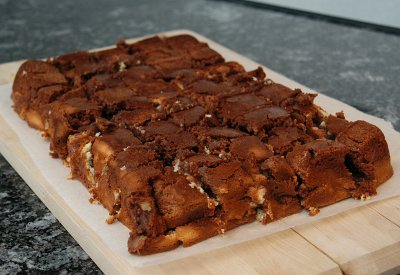

| Zutaten: | |
| 220 g | Butter oder Margarine |
| 120 g | ungesüsste Schokolade |
| 500 g | Zucker |
| 4 | Eier |
| 120 g | Mehl |
| 0.5 El | Salz |
| 120 g | gehackte Walnüsse |
| 2 El | Vanille |
| 225 g | Frischkäse |
Butter und Schokolade im Wasserbad schmelzen. Vom Herd nehmen und beiseite stellen.
400g Zucker und 3 Eier in eine Schüssel geben und mit dem Mixer vermischen.
Die Schokolade dazu mischen.
Mehl, Salz Walnüsse und 1 El Vanille zugeben und weiter mischen bis alles gut vermischt ist.
Das verbleibende Ei mit dem restlichen Zucker, der Vanille und dem Frischkäse ein einer frischen Schüssel mit dem Mixer gut vermischen.
Die Schokoladenmischung und die Frischkäsesauce abwechselnd mit dem Löffel in eine gebutterte und bemehlte Backform geben (9x13x2 Ich). Mit einem Messer Muster durch die Masse ziehen. Bei 180°C 45 bis 50 Minuten backen.
Nach dem Auskühlen in Würfel schneiden.
Ergibt: 24 2x2 Inch Brownies.
Konrad Hofstetter W&A, Dec 1994
Excellent brownies. For my brownies pan which is a little smaller than recommended I need to add 10 minutes to the baking time. RE, 28 Feb 2010
@LINKBACK_TAG@ @WAKELOCK@